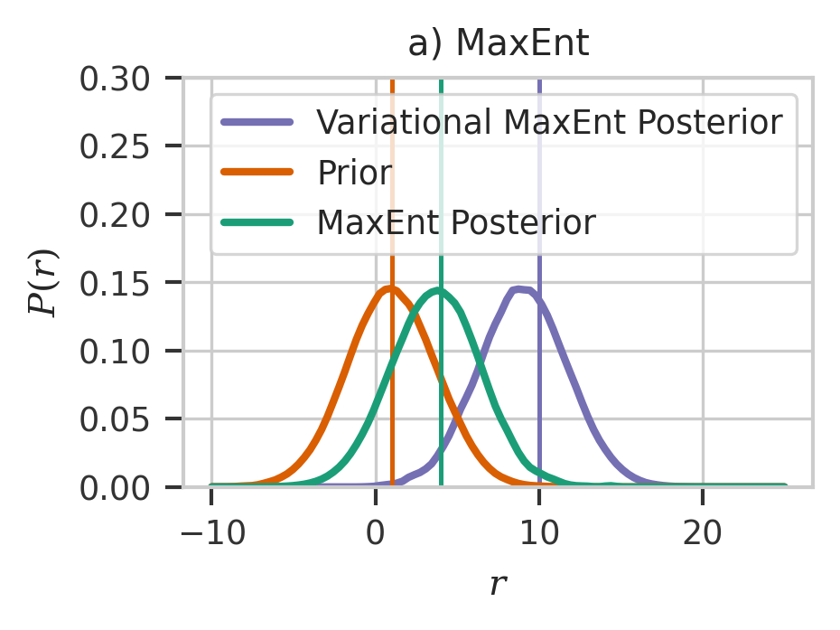
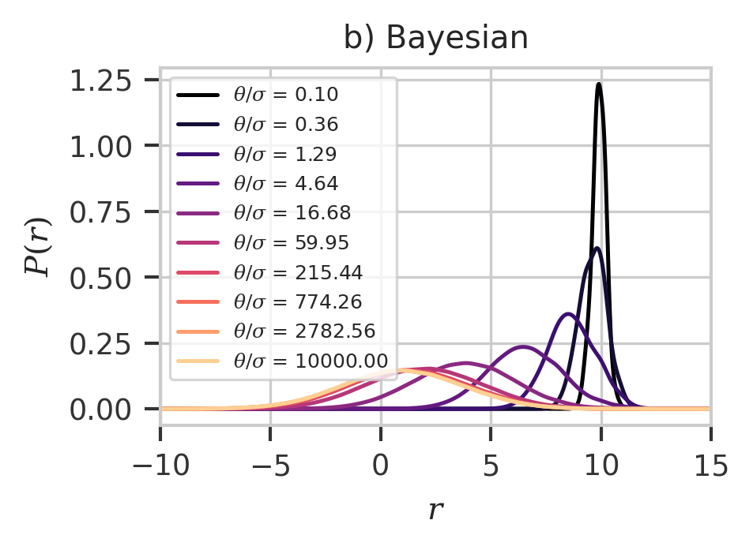
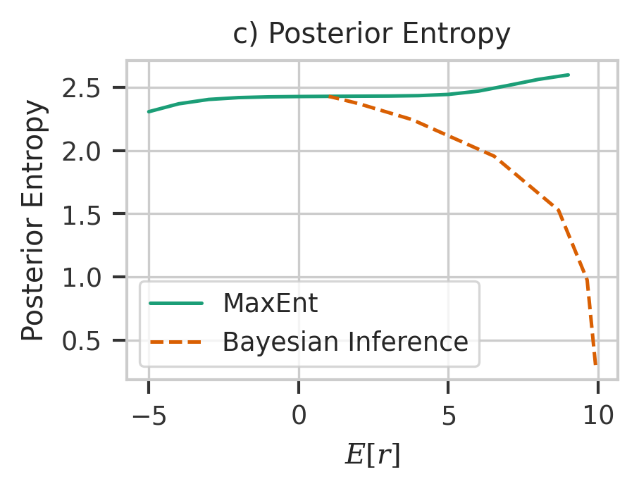

Gaussian Distribution Example
import tensorflow_probability as tfp
tfd = tfp.distributions
import matplotlib.pyplot as plt
import tensorflow as tf
import seaborn as sns
import numpy as np
import scipy
import tqdm
import maxent
import os
tf.random.set_seed(0)
np.random.seed(0)
os.environ["CUDA_VISIBLE_DEVICES"] = "-1"
sns.set_context("paper")
sns.set_style(
"whitegrid",
{
"xtick.bottom": True,
"ytick.left": True,
"xtick.color": "#333333",
"ytick.color": "#333333",
},
)
# plt.rcParams["font.family"] = "serif"
plt.rcParams["mathtext.fontset"] = "dejavuserif"
colors = ["#1b9e77", "#d95f02", "#7570b3", "#e7298a", "#66a61e"]
%matplotlib inline
2022-04-03 21:35:50.270399: W tensorflow/stream_executor/platform/default/dso_loader.cc:64] Could not load dynamic library 'libcudart.so.11.0'; dlerror: libcudart.so.11.0: cannot open shared object file: No such file or directory; LD_LIBRARY_PATH: /opt/hostedtoolcache/Python/3.8.12/x64/lib
2022-04-03 21:35:50.270437: I tensorflow/stream_executor/cuda/cudart_stub.cc:29] Ignore above cudart dlerror if you do not have a GPU set up on your machine.
Set-up Prior Distribution
x = np.array([1.0, 1.0])
i = tf.keras.Input((1,))
l = maxent.TrainableInputLayer(x)(i)
d = tfp.layers.DistributionLambda(
lambda x: tfd.Normal(loc=x[..., 0], scale=tf.math.exp(x[..., 1]))
)(l)
model = maxent.ParameterJoint([lambda x: x], inputs=i, outputs=[d])
model.compile(tf.keras.optimizers.Adam(0.1))
model(tf.constant([1.0]))
2022-04-03 21:35:52.602005: W tensorflow/stream_executor/platform/default/dso_loader.cc:64] Could not load dynamic library 'libcuda.so.1'; dlerror: libcuda.so.1: cannot open shared object file: No such file or directory; LD_LIBRARY_PATH: /opt/hostedtoolcache/Python/3.8.12/x64/lib
2022-04-03 21:35:52.602042: W tensorflow/stream_executor/cuda/cuda_driver.cc:269] failed call to cuInit: UNKNOWN ERROR (303)
2022-04-03 21:35:52.602068: I tensorflow/stream_executor/cuda/cuda_diagnostics.cc:156] kernel driver does not appear to be running on this host (fv-az224-461): /proc/driver/nvidia/version does not exist
2022-04-03 21:35:52.602321: I tensorflow/core/platform/cpu_feature_guard.cc:151] This TensorFlow binary is optimized with oneAPI Deep Neural Network Library (oneDNN) to use the following CPU instructions in performance-critical operations: AVX2 AVX512F FMA
To enable them in other operations, rebuild TensorFlow with the appropriate compiler flags.
2022-04-03 21:35:52.705197: W tensorflow/python/util/util.cc:368] Sets are not currently considered sequences, but this may change in the future, so consider avoiding using them.
<tfp.distributions._TensorCoercible 'tensor_coercible' batch_shape=[1] event_shape=[] dtype=float32>
Simulator
def simulate(x):
y = np.random.normal(loc=x, scale=0.1)
return y
plt.figure()
unbiased_params = model.sample(100000)
y = simulate(*unbiased_params)
y = np.squeeze(y)
<Figure size 432x288 with 0 Axes>
pdf = scipy.stats.gaussian_kde(y)
x = np.linspace(-10, 10, 100)
plt.plot(x, pdf.pdf(x), color=colors[0], linewidth=2)
plt.axvline(np.mean(y), color=colors[0])
<matplotlib.lines.Line2D at 0x7f21a856f0a0>
Maximum Entropy Method
r = maxent.Restraint(lambda x: x, 4, maxent.EmptyPrior())
me_model = maxent.MaxentModel([r])
me_model.compile(tf.keras.optimizers.Adam(0.01), "mean_squared_error")
result = me_model.fit(y, epochs=4, batch_size=128)
plt.axvline(x=4, color=colors[0])
wpdf = scipy.stats.gaussian_kde(
np.squeeze(y), weights=np.squeeze(me_model.traj_weights)
)
x = np.linspace(-10, 10, 100)
plt.plot(x, wpdf.pdf(x), color=colors[0], linewidth=2)
plt.plot(x, pdf.pdf(x), color=colors[1], linewidth=2)
plt.axvline(np.mean(np.squeeze(y)), color=colors[1])
<matplotlib.lines.Line2D at 0x7f2118fde700>
Variational MaxEnt
Try to fit to more extreme value - 10
r = maxent.Restraint(lambda x: x, 10, maxent.EmptyPrior())
hme_model = maxent.HyperMaxentModel([r], model, simulate)
hme_model.compile(tf.keras.optimizers.SGD(0.005), "mean_squared_error")
result = hme_model.fit(epochs=4, sample_batch_size=len(y) // 4, verbose=0)
WARNING:tensorflow:Gradients do not exist for variables ['value:0'] when minimizing the loss. If you're using `model.compile()`, did you forget to provide a `loss`argument?
WARNING:tensorflow:Gradients do not exist for variables ['value:0'] when minimizing the loss. If you're using `model.compile()`, did you forget to provide a `loss`argument?
WARNING:tensorflow:Gradients do not exist for variables ['value:0'] when minimizing the loss. If you're using `model.compile()`, did you forget to provide a `loss`argument?
w2pdf = scipy.stats.gaussian_kde(
np.squeeze(hme_model.trajs), weights=np.squeeze(hme_model.traj_weights)
)
plt.figure(figsize=(3, 2), dpi=300)
x = np.linspace(-10, 25, 100)
plt.plot(
x, w2pdf.pdf(x), color=colors[2], linewidth=2, label="Variational MaxEnt Posterior"
)
plt.axvline(x=10, color=colors[2])
plt.plot(x, pdf.pdf(x), color=colors[1], linewidth=2, label="Prior")
plt.axvline(np.mean(np.squeeze(y)), color=colors[1])
plt.plot(x, wpdf.pdf(x), color=colors[0], linewidth=2, label="MaxEnt Posterior")
plt.axvline(x=4, color=colors[0])
plt.ylim(0, 0.30)
plt.xlabel(r"$r$")
plt.ylabel(r"$P(r)$")
plt.title("a) MaxEnt")
plt.legend()
plt.savefig("maxent.svg")

Bayesian Inference Setting
# https://pubmed.ncbi.nlm.nih.gov/26723635/
plt.figure(figsize=(3, 2), dpi=300)
x = np.linspace(-10, 25, 1000)
cmap = plt.get_cmap("magma")
prior_theta = 10 ** np.linspace(-1, 4, 10)
bpdf = np.exp(-((y - 10) ** 2) / (2 * prior_theta[:, np.newaxis]))
bpdf /= np.sum(bpdf, axis=1)[:, np.newaxis]
for i, p in enumerate(prior_theta):
ppdf = scipy.stats.gaussian_kde(np.squeeze(y), weights=bpdf[i])
plt.plot(
x,
ppdf.pdf(x),
color=cmap(i / len(prior_theta)),
label=f"$\\theta/\\sigma$ = {p:.2f}",
)
plt.legend(fontsize=6)
plt.xlim(-10, 15)
plt.xlabel(r"$r$")
plt.ylabel(r"$P(r)$")
plt.title("b) Bayesian")
plt.savefig("bayes.svg")
plt.show()

Effects of Observable
bayesian_results = []
# scipy.stats.wasserstein_distance(y, y, u_weights=np.ones_like(y) / len(y), v_weights=bpdf[i])])
x2 = np.linspace(-20, 20, 10000)
for i in range(len(prior_theta)):
ppdf = scipy.stats.gaussian_kde(np.squeeze(y), weights=bpdf[i])
bayesian_results.append(
[
np.sum(ppdf.pdf(x) * x * (x[1] - x[0])),
-np.nansum((x[1] - x[0]) * ppdf.pdf(x) * np.log(ppdf.pdf(x))),
]
)
print(i, bayesian_results[-1])
/tmp/ipykernel_2047/2902584349.py:9: RuntimeWarning: divide by zero encountered in log
-np.nansum((x[1] - x[0]) * ppdf.pdf(x) * np.log(ppdf.pdf(x))),
/tmp/ipykernel_2047/2902584349.py:9: RuntimeWarning: invalid value encountered in multiply
-np.nansum((x[1] - x[0]) * ppdf.pdf(x) * np.log(ppdf.pdf(x))),
0 [9.911016359048261, 0.30425735781630875]
1 [9.631094028403169, 0.9771244951498036]
2 [8.674678518807875, 1.5288348252198853]
3 [6.526128590020791, 1.9553957761896448]
4 [3.7846027053356988, 2.244649224089299]
5 [1.9951996500959486, 2.371265813381091]
6 [1.2995967637152959, 2.4118962049488717]
7 [1.0843316455584768, 2.423766089350074]
8 [1.022553823634384, 2.4271149096040285]
9 [1.0052135486225569, 2.4280502822459478]
me_results = []
for i in range(-5, 10):
r = maxent.Restraint(lambda x: x, i, maxent.EmptyPrior())
m = maxent.MaxentModel([r])
m.compile(tf.keras.optimizers.Adam(0.001), "mean_squared_error")
m.fit(y, epochs=4, batch_size=256, verbose=0)
# d = scipy.stats.wasserstein_distance(y, y, u_weights=m.traj_weights)
ppdf = scipy.stats.gaussian_kde(y, weights=m.traj_weights)
d = -np.nansum((x[1] - x[0]) * ppdf.pdf(x) * np.log(ppdf.pdf(x)))
me_results.append([i, d])
print(np.sum(y * m.traj_weights), d)
-4.760423 2.3069205939822193
-3.8109474 2.369451634879959
-2.8259637 2.4038350683924916
-1.9008719 2.418447778248499
-0.9553167 2.4243713533689775
0.02761423 2.4268825734152277
/tmp/ipykernel_2047/1084787031.py:9: RuntimeWarning: divide by zero encountered in log
d = -np.nansum((x[1] - x[0]) * ppdf.pdf(x) * np.log(ppdf.pdf(x)))
/tmp/ipykernel_2047/1084787031.py:9: RuntimeWarning: invalid value encountered in multiply
d = -np.nansum((x[1] - x[0]) * ppdf.pdf(x) * np.log(ppdf.pdf(x)))
1.0098245 2.428427371215414
1.9941295 2.429549255552888
2.9686313 2.430669696554571
3.8970127 2.433814611183493
4.834799 2.4436552807610807
5.8534675 2.4694963629429747
6.846133 2.5148259781116122
7.641946 2.562180831046047
8.217658 2.597753775412778
plt.figure(figsize=(3, 2), dpi=300)
me_result = np.array(me_results)
bayesian_results = np.array(bayesian_results)
plt.plot(me_result[:, 0], me_result[:, 1], label="MaxEnt", color=colors[0])
plt.plot(
bayesian_results[:, 0],
bayesian_results[:, 1],
linestyle="--",
label="Bayesian Inference",
color=colors[1],
)
plt.ylabel("Posterior Entropy")
plt.xlabel("$E[r]$")
plt.legend()
plt.title("c) Posterior Entropy")
plt.savefig("post.svg")
plt.show()

bayesian_results[:]
array([[9.91101636, 0.30425736],
[9.63109403, 0.9771245 ],
[8.67467852, 1.52883483],
[6.52612859, 1.95539578],
[3.78460271, 2.24464922],
[1.99519965, 2.37126581],
[1.29959676, 2.4118962 ],
[1.08433165, 2.42376609],
[1.02255382, 2.42711491],
[1.00521355, 2.42805028]])